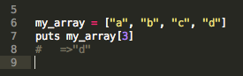
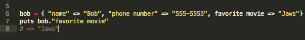

Week 4: Technical: Array vs. Hash
August 10th, 2014
Two of the built-in data structures in Ruby are arrays and hashes. Both are ways of storing multiple elements or data points, but they differ in the way those items are stored, and the way you access them.
Arrays
A simple way to think of an array is as a list. It's a simple list of items, stored in a specific order. The order matters - Ruby assigns each element (member) of the array an "index" number based on where it falls in the array. The first element in your array is at index 0, the second element is at index 1, the third is at index 2, and so on. Don't ask my why they start at 0 - that's above my pay grade!
It is extremely useful in certain situations to be able to access an element by a number value. One example of this is if you are decoding a simple Caesar Cipher, where each letter of the alphabet is shifted a certain number of letters to give you the encrypted version of that letter. Let's say you know the cipher is 4 letters off - that is, the letter "a" appears as "e" in the encoded version of the sentence, the letter "b" appears as "f", and so on. You could easily create an array that stores each letter of the alphabet, a-z, as elements. Each of those letters is assigned an index number. The index for "a" is 0, the index for "b" is 1, and so on. Since there is a predictable numerical relationship between the index number of the encoded letter and its true value, it's simply a matter of plugging in the encoded character to a method that spits out the decoded version.
Hashes
Hashes are also lists of data in Ruby. However, order of elements is NOT important in hashes, as it is in arrays. Rather than being organized by index number, values in a hash have a specific, unique key. This key could be a number, a letter, a string, or really anything! These "key-value pairs" are how you access data in hashes. If you ask Ruby for the value that belongs to a particular key, it will return that value.
Hashes are especially useful for storing info that you will need to access by keyword. For example, let's say we're storing information about our new friend Bob. We could create a hash named Bob, and store his name, phone number, email address, hobbies, favorite movies, etc. Each of those items would be a key, and the value would be the specific info about Bob. If we ever needed to look up what Bob's favorite movie was, we could just ask Ruby for the value at the "favorite movie" key. This is much easier than using an array and trying to remember what index number we stored the movie at!
